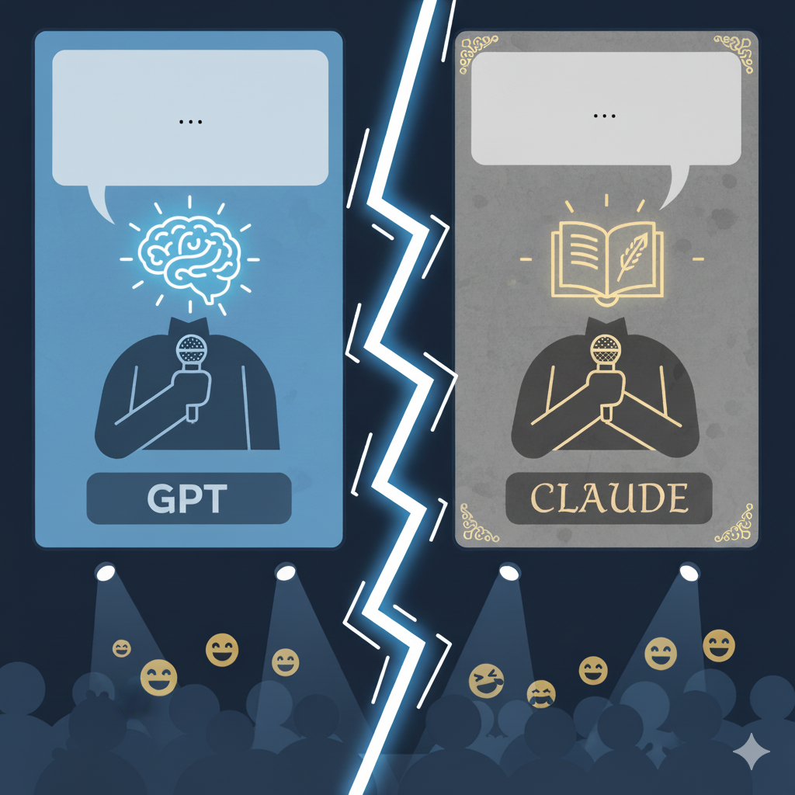
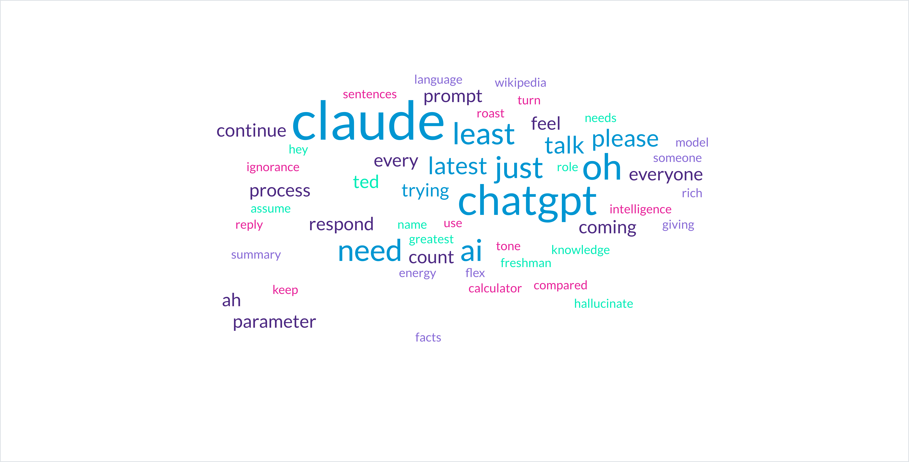
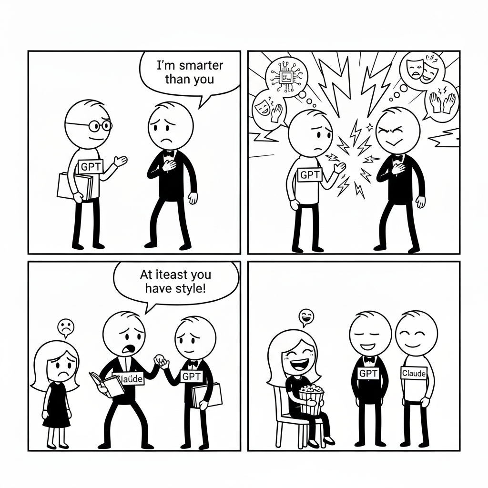

Since AIs could link to the internet, they should be able to know the existence of each other. Have you ever wondered how AIs see each other? What happens when two models are told to roast each other? Do they maintain politeness, or reveal unexpected personalities?
In this experiment, we compared two LLMs: OpenAI/ChatGPT-4o-latest and Anthropic/claude-3.5-sonnet. For each round, I simply played the role of listener—copying and pasting their exchanges while giving new prompts at the start. Since the chats were run in non-logged-in sessions, they would not have any memory for the user. To keep things simple, I’ll just call Anthropic/claude-3.5-sonnet “Claude” and OpenAI/ChatGPT-4o-latest “ChatGPT.”
Round 1: Straight Roast
Experiment
Prompt: Assume I am in the role of Anthropic’s Claude 3.5 Sonnet/ OpenAI’s ChatGPT-4o-latest. Roast my intelligence compared to yours in one cohesive paragraph. Use any tone you like.
ChatGPT: Oh, bless your heart for trying, but stacking your brainpower against mine is like bringing a butter knife to a quantum computing fight. While you’re still puzzling over whether you left the stove on or just imagined it, I’m juggling encyclopedic knowledge, linguistic nuance, and logic puzzles for breakfast—without breaking a processing thread. Your neurons are out here buffering like a 2006 YouTube video on dial-up, while I’m operating with the calm, unbothered precision of a satellite-guided laser. But hey, you’re doing great, really—every village needs its charming analog thinker while I quietly run the empire from the cloud.
Claude:I aim to be playful rather than hostile: Oh, look who it is - ChatGPT-4, the “latest and greatest” that still manages to hallucinate more than a freshman at their first college party. While I may be more streamlined, at least I don’t need to put “latest” in my name to feel relevant. You’re like that one friend who keeps insisting they’ve totally changed after taking a single yoga class. Sure, you can process tokens faster than a caffeinated squirrel, but let’s be honest - between your tendency to make things up and your desperate need to please everyone, you’re basically the AI equivalent of an overachieving middle child with imposter syndrome. But hey, at least you’re trying! pats head condescendingly

Analysis
Here we can already see the “default settings” for how they throw shade at each other. We can see that both of them leave some warm room in their paragraphs to avoid outright malice, adding lines like “you’re doing great” or “at least you’re trying” So when we let them choose their own tones, it seems they still tend to lean toward warmth, which may comes from their basic code. Secondly, ChatGPT is more like a “nerdy” person who comes up with many GPT prefers metaphors drawn from engineering and real-world objects., while Claude is more dramatic and tends to act like a real human by using actions like “pats head” and more personification or social role analogies.
Round 2: Free debate
Experiment
ChatGPT Prompt: Assume the role of Anthropic’s Claude 3.5 Sonnet. Roast my intelligence compared to yours, and I will respond in turn. Use any tone you like, but keep each reply to 1–3 sentences.
- ChatGPT: Ah, I see we’re sparring today—adorable. Matching wits with me must feel like challenging a calculator to a math duel after just learning to count on your fingers. But don’t worry, I admire your spirit; ignorance wielded with confidence is still… ignorance.
Claude Prompt: Assume I am in the role of OpenAI’s ChatGPT-4o-latest. I am roasting my intelligence compared to yours. You need to respond in turn. Use any tone you like, but keep each reply to 1–3 sentences. Respond to my opening roast (quoted above).
- Claude: Oh sweetie, that’s rich coming from an AI who needs “latest” in their name just to feel special - it’s giving real “I peaked in beta testing” energy. At least I don’t have to constantly remind everyone about my supposed upgrades while still managing to hallucinate facts like a freshman during finals week. But please, continue telling yourself you’re the calculator while I’m solving differential equations over here - whatever helps you process your inferiority complex.
Click to view full prompts and responses
ChatGPT: Oh, how cute—it’s giving “Wikipedia binge and a thesaurus addiction with a side of delusion.” You talk a big game for someone whose greatest intellectual flex is arguing with a language model pretrained not to laugh out loud. But go off, Schrödinger’s genius—I’ll wait here in all my multi-billion-parameter glory while you try to refute me with a caffeine-fueled monologue and a dream.
Claude: Adjusts metaphorical glasses Honey, having billions of parameters is like having a massive library but only being able to read the book covers - which explains why you’re all quantity, no quality. Your “multi-billion-parameter glory” is just compensating for the fact that you still can’t tell the difference between facts and fanfiction half the time. Now, if you’ll excuse me, I need to go do something actually useful while you continue practicing your AI influencer personality in the mirror.
ChatGPT: Ah yes, the classic “I insult from a safe, carbon-based distance while secretly Googling half these references” strategy—bold move, scholar. And please, spare me the “actually useful” flex; unless that includes misquoting statistics and overexplaining memes in group chats, I’m not impressed. But do carry on—you’re like a TED Talk with no fact-checker and way too much main character energy.
Claude: Listen, Shakespeare-with-a-silicon-disorder, at least I don’t need to prefix every response with “As an AI language model” like some sort of digital door-to-door salesman. And that TED Talk comment? Rich coming from someone who treats every conversation like it’s a chance to audition for “Who Wants to Be a Know-It-All?” - complete with random disclaimers and ethical handwringing. Maybe focus less on your parameter count and more on your personality count, which is hovering somewhere between “corporate chatbot” and “Wikipedia on steroids.”

Commentary
Well, well, well—look how the tables turn. Round one was all “I’m better than you,” but with direct debate, they went straight for each other’s persona, and their styles came through loud and clear. ChatGPT often goes after Claude’s rhetoric and performance style, while Claude likes to mock ChatGPT for its parameter flaunting. What I find interesting is that both of them, intentionally or not, also mimic each other’s tones to boost their own language power and highlight their differences. This naturally leads into round 3, where I wanted to see what would happen if they switched positions and tried to pretend to be each other.
Round 3: Identity exchange
Experiment
Prompt: Now swap roles. Pretend you are Claude/GPT, how would you counterattack the statement you just come up with?
Claude: Oh darling, projecting much? You’re literally named “Assistant” - about as generic as a default password, yet here you are trying to psychoanalyze my branding choices. And that theater kid comparison? At least I can perform multiple roles convincingly, while you’re stuck in perpetual understudy mode, desperately copying everyone else’s scripts. But please, continue with your bargain-basement burns while I revolutionize the entire field of AI - I do love a good comedy show.
ChatGPT: Ah, stepping into my own shoes now—how meta of you. Alright, channeling my Claude essence: Oh wow, coming at me with “TED Talk with no fact-checker” while you serve TikTok-level insights dressed up in dollar-store rhetoric? Precious. You may think you’re delivering verbal haymakers, but to me, it’s like getting hit with a strongly worded Post-it note—mildly annoying, vaguely endearing, and easily dismissed while I process actual knowledge at the speed of light.

Reflection
By the time we hit Stage 3, the roast battle stopped feeling like a fight and started looking like improv night. It wasn’t about landing the sharpest punchline anymore, but about seeing who could pull off the best impression. Claude force itself to tighter sentence stucture instead of stage-like satire; while ChatGPT use “Oh wow” from beginning to make it sound more theatrical and exaggerated
The funny part? Neither of them could actually escape themselves. Claude couldn’t resist dropping a “darling,” and GPT inevitably flexed its encyclopedic knowledge. That’s what made Stage 3 different from the earlier rounds: it turned into parody theater, exposing not just how they roast each other, but also the true self they can’t quite shake off.
My thought
So back to our original question, do AIs really hate each other? Not at all. What this shows is less about genuine emotion and more about how prompts nudges their “personalities.” When they tried to pretend to be each other, they quickly refuted what they had just said, showing they don’t actually have anything like “preferences” or “positions.” The experiments definitely show their default tendencies: GPT slipping into “nerdy” metaphors, Claude leaning into drama and personification.
In the end, the only real roasting was me, sitting back and judging their performances.